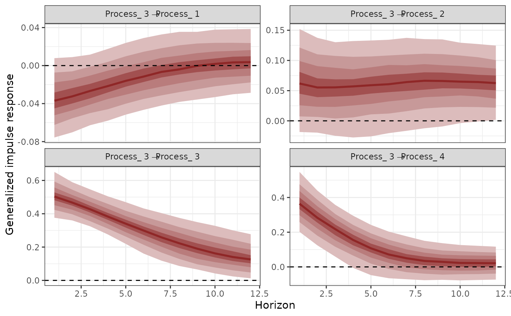
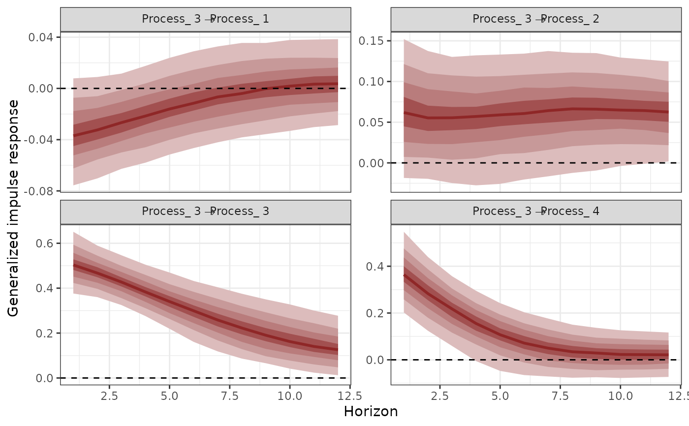

Compute Generalized or Orthogonalized Impulse Response Functions (IRFs) from
mvgam models with Vector Autoregressive dynamics
Usage
irf(object, ...)
# S3 method for class 'mvgam'
irf(object, h = 1, cumulative = FALSE, orthogonal = FALSE, ...)Arguments
- object
listobject of classmvgamresulting from a call tomvgam()that used a Vector Autoregressive latent process model (either asVAR(cor = FALSE)orVAR(cor = TRUE))- ...
ignored
- h
Positive
integerspecifying the forecast horizon over which to calculate the IRF- cumulative
Logicalflag indicating whether the IRF should be cumulative- orthogonal
Logicalflag indicating whether orthogonalized IRFs should be calculated. Note that the order of the variables matters when calculating these
Value
An object of class mvgam_irf containing the posterior IRFs. This
object can be used with the supplied S3 functions plot
Details
Generalized or Orthogonalized Impulse Response Functions can be computed
using the posterior estimates of Vector Autoregressive parameters. This function
generates a positive "shock" for a target process at time t = 0 and then
calculates how each of the remaining processes in the latent VAR are expected
to respond over the forecast horizon h. The function computes IRFs for all
processes in the object and returns them in an array that can be plotted using
the S3 plot function. To inspect community-level metrics of stability using latent
VAR processes, you can use the related stability function.
References
PH Pesaran & Shin Yongcheol (1998). Generalized impulse response analysis in linear multivariate models. Economics Letters 58: 17–29.
Examples
# \donttest{
# Simulate some time series that follow a latent VAR(1) process
simdat <- sim_mvgam(
family = gaussian(),
n_series = 4,
trend_model = VAR(cor = TRUE),
prop_trend = 1
)
plot_mvgam_series(data = simdat$data_train, series = "all")
 # Fit a model that uses a latent VAR(1)
mod <- mvgam(y ~ -1,
trend_formula = ~1,
trend_model = VAR(cor = TRUE),
family = gaussian(),
data = simdat$data_train,
chains = 2,
silent = 2
)
# Calulate Generalized IRFs for each series
irfs <- irf(mod, h = 12, cumulative = FALSE)
# Plot them
plot(irfs, series = 1)
# Fit a model that uses a latent VAR(1)
mod <- mvgam(y ~ -1,
trend_formula = ~1,
trend_model = VAR(cor = TRUE),
family = gaussian(),
data = simdat$data_train,
chains = 2,
silent = 2
)
# Calulate Generalized IRFs for each series
irfs <- irf(mod, h = 12, cumulative = FALSE)
# Plot them
plot(irfs, series = 1)
 plot(irfs, series = 2)
plot(irfs, series = 2)
 plot(irfs, series = 3)

# Calculate posterior median, upper and lower 90th quantiles
# of the impulse responses
summary(irfs)
#> # A tibble: 192 × 5
#> shock horizon irf_median irf_Qlower irf_Qupper
#> <chr> <int> <dbl> <dbl> <dbl>
#> 1 Process1 -> Process1 1 0.680 0.454 0.887
#> 2 Process1 -> Process1 2 -0.0654 -0.329 0.174
#> 3 Process1 -> Process1 3 -0.383 -0.583 -0.166
#> 4 Process1 -> Process1 4 -0.0376 -0.286 0.203
#> 5 Process1 -> Process1 5 0.248 0.0836 0.425
#> 6 Process1 -> Process1 6 0.104 -0.0604 0.292
#> 7 Process1 -> Process1 7 -0.0927 -0.255 0.0348
#> 8 Process1 -> Process1 8 -0.0686 -0.246 0.0647
#> 9 Process1 -> Process1 9 0.0535 -0.0756 0.198
#> 10 Process1 -> Process1 10 0.0624 -0.0185 0.214
#> # ℹ 182 more rows
# }
plot(irfs, series = 3)

# Calculate posterior median, upper and lower 90th quantiles
# of the impulse responses
summary(irfs)
#> # A tibble: 192 × 5
#> shock horizon irf_median irf_Qlower irf_Qupper
#> <chr> <int> <dbl> <dbl> <dbl>
#> 1 Process1 -> Process1 1 0.680 0.454 0.887
#> 2 Process1 -> Process1 2 -0.0654 -0.329 0.174
#> 3 Process1 -> Process1 3 -0.383 -0.583 -0.166
#> 4 Process1 -> Process1 4 -0.0376 -0.286 0.203
#> 5 Process1 -> Process1 5 0.248 0.0836 0.425
#> 6 Process1 -> Process1 6 0.104 -0.0604 0.292
#> 7 Process1 -> Process1 7 -0.0927 -0.255 0.0348
#> 8 Process1 -> Process1 8 -0.0686 -0.246 0.0647
#> 9 Process1 -> Process1 9 0.0535 -0.0756 0.198
#> 10 Process1 -> Process1 10 0.0624 -0.0185 0.214
#> # ℹ 182 more rows
# }